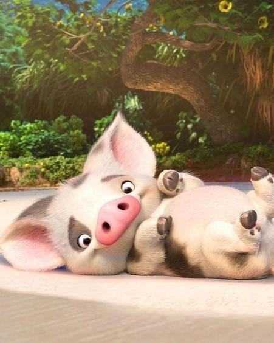
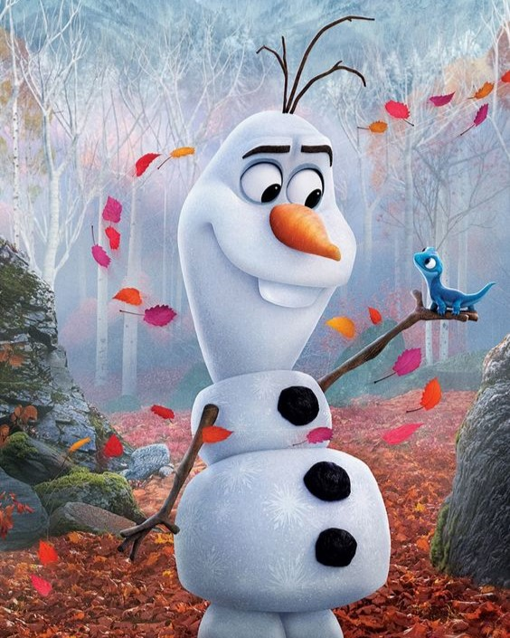
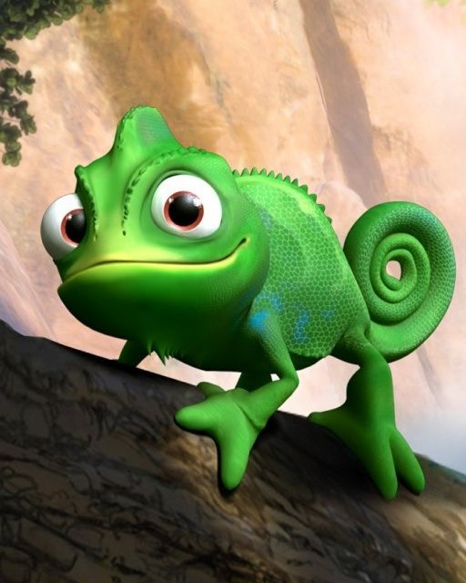
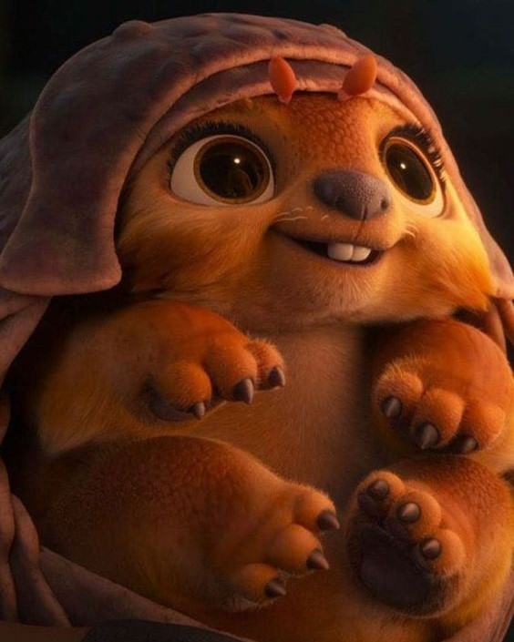
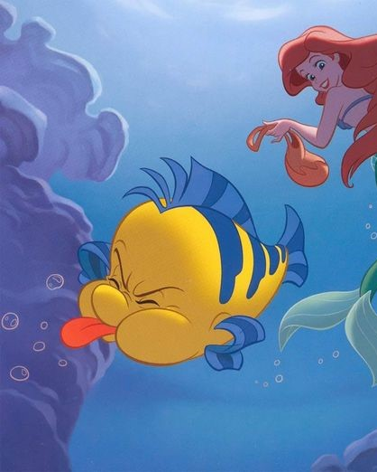
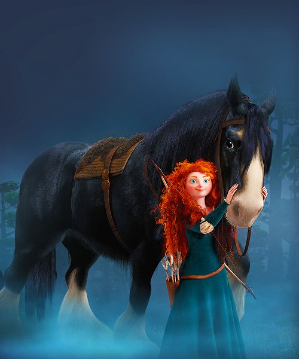

|  |
Pua |
Seekor babi yang setia dan sangat lucu dalam film "Moana". Sebagai
hewan peliharaan Moana, Pua adalah sahabat dekatnya yang selalu
memberikan dukungan dan keceriaan. Meskipun ukurannya kecil, Pua
memiliki keberanian yang besar dan selalu siap mendukung Moana
dalam setiap petualangan. Dia sering kali menjadi sumber hiburan
dalam cerita dengan tingkah lakunya yang kocak dan lucu.
Kehadirannya memberikan warna dan keceriaan tambahan dalam
perjalanan Moana menuju misinya yang berani.
|
|  |
Olaf |
Boneka salju hidup yang dibuat oleh Elsa dan Anna saat mereka
masih kecil. Meskipun terbuat dari salju, Olaf memiliki
kepribadian yang ceria dan polos. Dia sering kali menjadi sumber
komedi dalam film dengan ucapan dan tingkah lakunya yang lucu.
Meskipun memiliki keinginan untuk merasakan musim panas, yang
bertentangan dengan sifatnya yang terbuat dari salju, Olaf tetap
setia sebagai teman yang mendukung Anna dan Elsa dalam setiap
petualangan mereka.
|
|  |
Pascal |
Kameleon peliharaan Rapunzel dalam film "Tangled". Meskipun dia
tidak bisa berbicara, ekspresi wajahnya dan gerak-geriknya sering
kali mengekspresikan lebih dari seribu kata. Pascal adalah sahabat
setia Rapunzel sejak kecil dan selalu mendukungnya dalam
petualangan mereka. Dia adalah pendengar yang baik dan selalu
memberikan dukungan moral kepada Rapunzel dalam situasi sulit.
Meskipun kecil, Pascal memiliki hati yang besar dan sering kali
berperan sebagai pemicu dalam perubahan positif bagi Rapunzel dan
kisah petualangannya.
|
|  |
Tuk Tuk |
Hewan pengangkut yang tidak biasa dalam film "Raya and the Last
Dragon". Dia adalah teman setia Raya dan menjadi kendaraan
utamanya dalam menjelajahi dunia Kumandra. Tuk Tuk memiliki tubuh
yang besar dan dilengkapi dengan kulit keras yang kokoh, serta
empat kaki yang kuat untuk menembus berbagai medan. Meskipun
bentuknya yang unik, Tuk Tuk memiliki hati yang besar dan selalu
setia mendukung Raya dalam setiap petualangannya. Keberadaannya
tidak hanya sebagai kendaraan, tetapi juga sebagai teman yang
setia dan pendukung bagi Raya dalam menghadapi berbagai rintangan
dan bahaya.
|
|  |
Flounder |
Seekor ikan kecil yang lucu dan setia dalam film "The Little
Mermaid". Dia adalah sahabat terdekat Ariel, sang putri duyung,
dan selalu mendukungnya dalam petualangan bawah lautnya. Meskipun
Flounder sering kali cemas dan khawatir, dia selalu bersedia
membantu Ariel dalam menjalani impian dan menghadapi rintangan.
Kepribadiannya yang ramah dan lucu membuat Flounder menjadi
karakter yang dicintai oleh banyak penonton dan memberikan warna
tambahan dalam kisah magis "The Little Mermaid".
|
|  |
Angus |
Seekor kuda yang kuat dan setia dalam film "Brave". Dia adalah
kuda tunggangan Merida, sang putri pemberani dari Dunbroch. Angus
memiliki tubuh yang besar dan kokoh, serta hati yang setia dan
penuh semangat. Meskipun terkadang keras kepala, Angus selalu
mendukung Merida dalam setiap petualangannya. Hubungan antara
Merida dan Angus sangat erat, dan Angus sering menjadi sumber
kekuatan dan dukungan bagi sang putri dalam menjalani nasibnya.
Keberadaannya tidak hanya sebagai kuda tunggangan, tetapi juga
sebagai sahabat setia dan mitra dalam perjalanan yang berani.
|